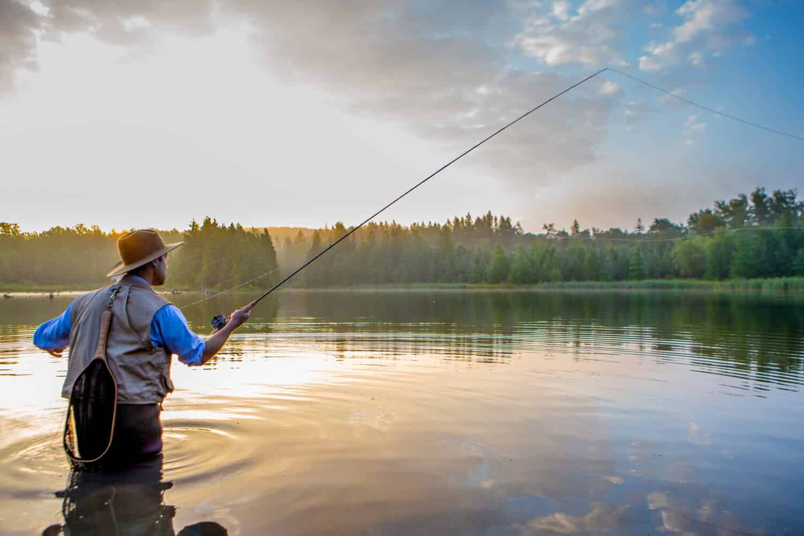

Saluda Valley Guides offers both float trips with fly tackle as well as conventional rod on the
Congaree. Early spring offers our anglers the chance at the large stripers as they migrate from as far
as the coast to summer in the Lower Saluda. The lesser know, but probably the best fishing in this
historic river is for smallmouth bass. This fishery can be judged as world class with smallies as big as
six pounds lurking behind the rocks and boulders and in the deep holes. Sights include the Columbia, SC
skyline, ruins from the Civil War, and maybe a glimpse at a wary gator.